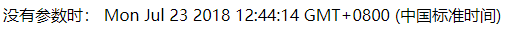
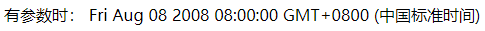

1、new Date()：
new Date();//获取电脑本机的时间，参数可有可无，没有参数时，获取到的是电脑本机的当前时间（获取到后时间不会自动更新），有参数时，参数为固定格式的某一时间。
例：
new Date('2008/8/8 8:00:00');
或者：
new Date('2008.8.8 8:00:00');


2、getFullYear()：
var a=new Date();
a.getFullYear();//获取年数。获取到的年数根据`new Date`是否有参数来定：没有参数，获取到的是电脑本机当前时间的年数，有参数时，获取到的是参数中的年数。
例：
new Date().getFullYear();//2018
new Date('2008/8/8 8:00:00').getFullYear;//2008
3、getMonth():
var a=new Date();
a.getMonth();//获取月数。获取到的月数根据`new Date`是否有参数来确定：原理同'getFullYear'。
例：
new Date().getMonth();//6
new Date(2008/8/8 8:00:00).getMonth();//7
注意：在getMonth()中，0对应1月，1对应2月，…，11对应12月！
4、getDate():
var a=new Date;
a.getDate;//获取日数。获取到的日数根据‘new Date’是否有参数来确定：原理同‘getFullYear’。
例：
new Date().getDate();//23
new Date(2018/8/8 8:00:00).getDate();//8
5、getDay():
var a=new Date;
a.getDay();//获取星期数。获取到的星期数根据‘new Date’是否有参数来确定：原理同‘getFullYear’。
例：
new Date().getDay();//1
new.Date(2008/8/8 8:00:00).getDay();//5
注意：在getDay中，0代表星期日，1代表星期1，…，6代表星期6.
6、getHours():
var a=new Date();
a.getHours();//获取小时数。获取到的小时数根据‘new Date’是否有参数来确定：原理同‘getFullYear’。
例：
new Date().getHours();//当前时间的小时数
new Date('2008/8/8 8:00:00').getHours();//8
7、getMinutes():
var a=bew Date();
a.getMinutes();//获取分钟数。获取到的分钟数根据‘new Date’是否有参数来确定：原理同‘getFullYear’。
例：
new Date().getMinutes();//当前时间的分钟数
new Date(2008/8/8 8:00:00).getMinutes();//0
8、getSeconds():
var a=new Date();
a.getSeconds();//获取秒数。获取到的秒数根据‘new Date’是否有参数来确定：原理同‘getFullYear’。
例：
new Date().getSeconds();//当前时间的秒数
new Date(2008/8/8 8:00:00).getSeconds();//0
9、getMilliseconds():
var a=new Date();
a.getMilliseconds();//获取毫秒数。获取到的秒数根据‘new Date’是否有参数来确定：原理同‘getFullYear’。
例：
new Date().getMilliseconds();//当前时间的毫秒数
new Date(2008/8/8 8:00:00).getMilliseconds();//0
10、getTime():
var a=new Date();
a.getTime();//获取距离1970年的毫秒数。获取到的秒数根据‘new Date’是否有参数来确定：原理同‘getFullYear’。
例：
new Date().getTime();//获取当前时间距离1970年的毫秒数
new Date(2008/8/8 8:00:00);//1218153600000